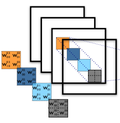
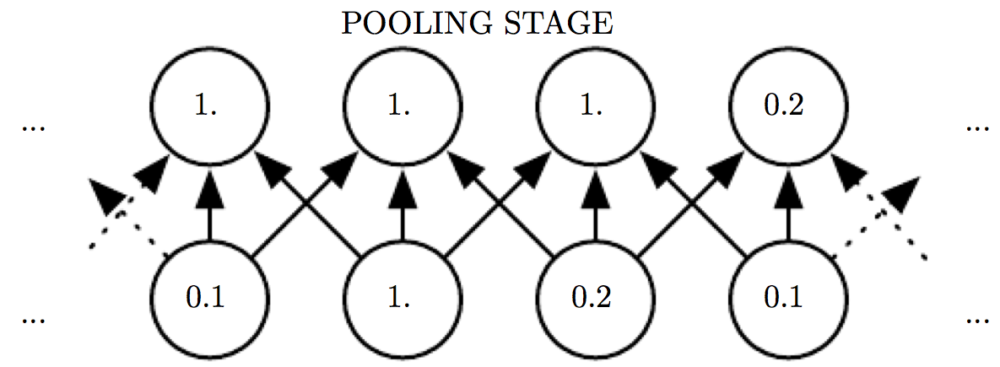
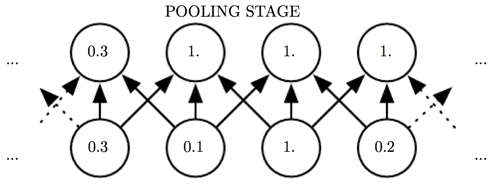
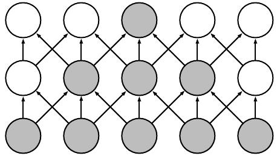
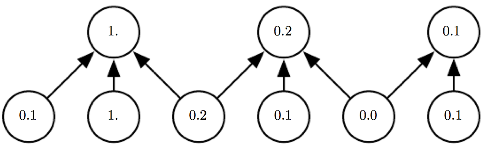

Convolutional Neural Networks
pedagogic talk based on
and
Deep Learning Seminar · ICB · Helmholtz Munich · 9 May 2016
F. Alexander Wolf |
Institute of Computational Biology
Helmholtz Munich


Motivation
- V1 is arranged in a spatial map mirroring the structure of the image in the retina.
- V1 has simple cells whose activity is a linear function of the image in a small localized receptive field.
- V1 has complex cells whose activity is invariant to small spatial translations.
- Neurons in V1 respond most strongly to very specific, simple patterns of light, such as oriented bars, but respond hardly to any other patterns.
Recap
- A Multilayer perceptron = Feedforward Neural Network is a probabilisitic model: layered matrix-multiplications stacked with non-linear activation functions.
- Optimize log likelihood (classification or regression error) by stochastic gradient descent. Full gradient by backpropagating layer gradients.
So, what is a Convolutional Neural Network?
- It's simply a neural network that
uses convolution
in place of a "general matrix multiplication" in
at least one of its layers.
LeCun, Bottou, Bengio & Haffner, Proc. IEEE 86 2278 (1998)
What is a convolution?
- convolution of functions $f(t)$ and $w(t)$ $$ (f * w)(t) = \int_{-\infty}^\infty d\tau\, w(t-\tau)\, f(\tau) $$
- similar to cross correlation of $f(t)$ and $w(t)$ $$ (f \star w)(t) = \int_{-\infty}^\infty d\tau\, w(t+\tau)\, f(\tau)$$
▷
In deep learning, both of these operations are used in its discrete form and referred to as "convolution".
Convolution as constraint matrix multiplication
- discrete convolution of functions $f_t$ and $w_t$, $t\in\{1,2,...,D\}$,$$ \mathbf{\tilde f} = \sum_\tau w_{t-\tau}\, f_\tau = \mathbf{W} \mathbf{f}, \quad \mathbf{\tilde f},\mathbf{f} \in \mathbb{R}^D $$ where $W_{t\tau} = w_{t-\tau}$, $\mathbf{W} \in \mathbb{R}^{D\times D}$.
▷ Instead of $D^2$, only $D$ independent components.
Natural extension: sparsity
-
demand: $w_{t-\tau} \stackrel{!}{=} 0$ for $|t-\tau| > d$
[usual property of kernels: e.g. Gaussian $ W_{t\tau} = e^{-\frac{(t-\tau)^2}{2d^2}}$]
▷ Instead of $D^2$, only $2d$ nonzero components. ▷ Statistics ☺!
Convolution as sparsity constraint: graphical
(arrows represent arbitrary values)
(arrows: same values across receptive fields )
When is convolution a useful sparsity constraint?
Consider an example ($d=1$)
$ \mathbf{W} = \left(\begin{array}{ccccc} \ddots & -1 & 1 & 0 & \ddots\\ \ddots & 0 & -1 & 1 & \ddots \end{array} \right)$ $\,\Leftrightarrow\,$ $\tilde f_t = f_t - f_{t-1}$,
that is, $\,\,\mathbf{f}$ =
$\mapsto\,\, \mathbf{\tilde f}$ =
▷ Simple edge structures are revealed!
When is convolution a useful sparsity constraint?
- To obtain $\mathbf{\tilde f}$, the same local linear operation is applied to every $t$ and its $d$ neighbors. Here, it's multiplying with $\mathbf{w} = (-1, 1)$.
- This is meaningful if data has dependencies between degrees of freedom $f_t$ that appear independent of the index $t$ and are constraint locally to distance $d$: data features local patterns.
Examples for such local patterns
- Images: edges
- Audio: frequency patterns
- Language: grammar structures
Test: information-content not invariant under permutation?
Learn a kernel
Let us initialize a kernel ($d=1$) with random values $w_i$
$ \mathbf{W} = \left(\begin{array}{ccccc} \ddots & w_1 & w_2 & 0 & \ddots\\ \ddots & 0 & w_1 & w_2 & \ddots \end{array} \right)$ $\,\Leftrightarrow\,$ $\tilde f_t = w_1 f_t + w_2 f_{t-1}$,
again, $\,\,\mathbf{f}$ =
$\mapsto\,\, \mathbf{\tilde f}$ =
- Also the random kernel seems to detect edges very well! Most work is already done! ▷ It seems not too hard to learn meaningful kernels!
Learn several kernels per layer
- Several kernels should learn different
local patterns:
e.g. edges oriented in different directions.

- So: evidently it's meaningful to use the same kernel for each location $t$ in the input, because patterns appear in the same way across locations $t$.
But: What about the relevance of where patterns appear?
Pooling layers and local translational invariance
Assumption
- In most cases, classification information does not depend strongly on the location (index $t$) of a pattern. That is, the presence of a pattern is more important than its location.
- In many cases, our only interest is the presence or absence of a pattern.
Example: shifting the input
- Pooling layer = implement local translational invariance
- here: max pooling layer

Assemble everything
- Read input $\mathbf{f}$.
-
Convolution stage
$\,\mathbf{\tilde f}^{(k)} := \mathbf{W}^{(k)} \mathbf{f},$
where $\mathbf{W}^{(k)}$ is one of $K$ convolution kernels, $k=1,...,K$. - Detector stage $\, \tilde f_t^{(k)} := \phi(\tilde f_t^{(k)} + b)$ where $\phi$ is an activation function, $b$ a bias.
- Pooling stage $\, \tilde f_t^{(k)} := \max_{\tau \in [t-d,t+d]} \tilde f_t^{(k)}$
Some comments
-
Receptive field can grow layer wise.

-
Downsampling after pooling layer accounts for reduced information.

- From a Bayesian view, convolutional networks encode our believes about the structure of certain data - as argued up to here - using an infinitely strong prior.
More comments/questions
- Why do we put fully connected layers on top of the convolutional layers? For example, if our classification label is translation-invariant, there should be a smarter way?
- Traditionally, CNNs have been used for whole-image classification. Recent work deals with their application to pixelwise classification (object detection, segmentation, tracking), and aims at going beyond and independent treatment of patches.
Thank you!